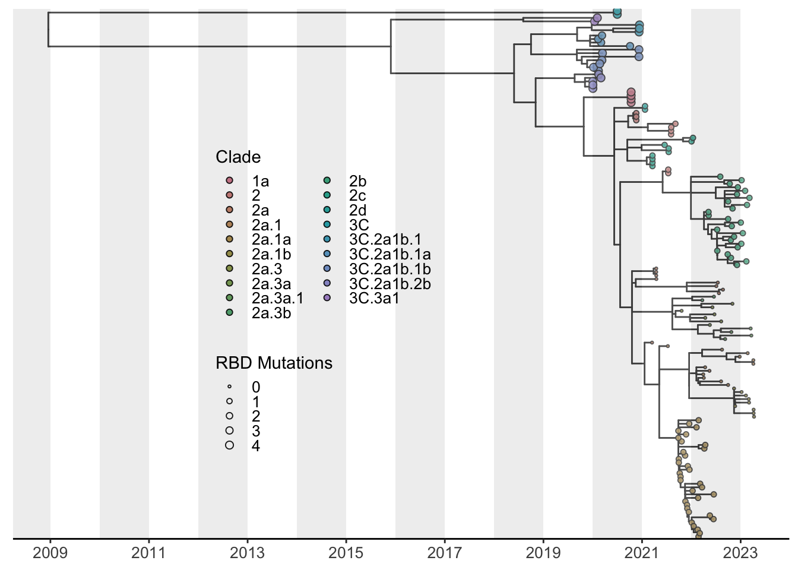

Constructing time-resolved phylogenetic trees, A tutorial
A basic tutorial for building and visualizing time-resolved phylogenetic trees
If you would prefer to follow along with the tutorial data and scripts, a clone of this notebook, data and all supporting information is available here. You can make a copy using
gitbut navigating to your desired folder and executing:git clone https://github.com/elginakin/flutreetutorial.
Introduction
Phylogenetic trees are a powerful tool to assess evolutionary relationships between organisms. While this tutorial does not cover the basic principles of viral evolution and ecology, it does provide a quick start guide to constructing, visualizing and annotating static phylogenetic trees using established tools developed and utilized by viral surveillance teams.
If you have already constructed your time tree in either BEAST, IQ-Tree, or TreeTime, you can skip straight to the time tree visualization section
This tutorial covers the basics of constructing and visualizing time-resolved phylogenetic trees using the H3N2 Influenza A virus as an example. This tutorial is intended for users with a basic understanding of the UNIX command line and R.
1. Setting up your environment and directories
This tutorial assumes you are operating on a machine with a UNIX-based terminal accessible (i.e. macOS, linux or WSL) some of the tools we use are not easily accessible on Windows machines.
Tree Construction
Tree Visualization (R)
- We will use the following packages for tree visualization in R. Be sure to install them if you have not already.
Full tutorials for more comprehensive phylognetic analysis pipelines with interactives are descrived in great detail with pathogen-specific tutorials by the Nextstrain Team. - Introduction to Nextstrain - Creating a phylogenetic workflow
Directories
we already have our data directory, go ahead and make 2 directory for our results and config in your home directory.
2. Accessing and exploring our data from NCBI
For simplicity in this tutorial, we will be accessing sequencing data deposited on NCBI by various groups. At the time of publishing this tutorial, the sequences were accessed from the NCBI Virus Database. In fall of 2024 NCBI will likely redirect the Influenza Virus Resources to NCBI Virus so this step will likely need to be updated for clarity in the near future.
Because these sequences are truly open source they are available in this tutorial and can be downloaded directly from this page:
This data set include human H3N2 sequences uploaded to NCBI between 2020 and 2024.
We changed the default fasta header template to the following definition for smooth analysis in augur:
{accession}|{strain}|{year}-{month}-{day}|{country}|{segment}
Lets take a quick peek at some information about our fasta. We already know from NCBI that there should be 10191 sequences available to us but lets just check. An incredibly powerful linux tool we can use is grep which you can learn more about here
10191 Great looks like we have all 10191 sequences.
Next, lets take a peek at our fasta headers. These headers are dennoted as information about our sequence precceed by a “>” and followed by a second line containing our sequencing data. Fasta headers can (theoretically) contain as much information as one pleases as long as it containing in the same line. In common databases such as NCBI Virus, GISAID, the BV-BRC, etc, a lot of information can be included in these headers. Why would one want to do this? Convenience is once answer as metadata complementing sequences can be 1:1 since we do not have to worry about joining these sequences with external metadata (covered at the end of this tutorial).
(If you downloaded data youself, you have likely specified what is included in the header but lets look anyway). By default, NCBI deliminates header information using spaces which is a problem when parsing.
MT056202|A/California/01/2020|2020-01-02|USA|4 GGATAATTCTATTAACCATGAAGACTATCATTGCTTTGAGCTGCATTCTATGTCTGGTTTTCGCTCAAAA AATTCCTGGAAATGACAATAGCACGGCAACGCTGTGCCTTGGGCACCATGCAGTACCAAACGGAACGATA GTGAAAACAATCACGAATGACCGAATTGAAGTTACTAATGCTACTGAGCTGGTTCAGAACTCCTCAATAG GTGAAATATGCGACAGTCCTCATCAGATCCTTGATGGAGAAAACTGCACACTAATAGATGCTCTATTGGG AGACCCTCAGTGTGATGGCTTTCAAAATAAGAAATGGGACCTTTTCGTTGAACGGAACAAAGCCTACAGC AACTGTTACCCTTATGATGTGCCGGATTATGCATCCCTTAGATCACTAGTTGCCTCATCCGGCACACTGG AGTTTAACAATGAAAGCTTCAATTGGGCTGGAGTCACTCAAAACGGAACAAGTTCTTCTTGCACAAGGGG ATCTAAAAGTAGTTTCTTTAGTAGATTAAATTGGTTGACCCACTTAAACTCCAAATACCCAGCATTAAAC GTGACTATGCCAAACAATGAACAATTTGACAAATTGTACATTTGGGGTGTTCACCACCCGGGTACGGACA`
These sequences have information for 5 attributes (from left to right) seperated by a |. * Accession * Strain Name * Collection Date * Country * Segment
Generating Metadata from fasta headers.
Let generate a metadata table using the information in the .fasta headers using ‘augur parse’.
Download and test augur parse if you gave not already. Augur parse REQUIRES that one attribute in your metadata is named “strain”. Let rename our accession number as “strain” as defined in the fields flag. This will take a second to run since we have so many sequences. We will downsample later in this tutorial.
We now have 2 new files, a fasta containing a reduced name representing the strain denotation from augur parse as well as metadata file containing the fields we specified.
It is not uncommon for sequences to uploaded with incomplete date date. In this case, we have 21 sequences which have year-month but not day. Luckily, the nextstrain team is on top of this prviding us with an augur subcommand called curate which we can use to format dates to make them compliant with ISO 8601 dates (YYYY-MM-DD) where missing data are represented with “XX” (e.g. 2021-07- will be converted to 2021-07-XX )
Curate meatadata file dates
Great! Our dates are now in a proper format for time-resolved tree construction. If we manually inspect our results dates_metadata.tsv file, we can see that missing days have been replaced with the XX ambiguity for the day.
| strain | strain_name | date | country | segment |
|---|---|---|---|---|
| OQ180101 | A/WA/39360/2022 | 2022-11-XX | USA | 4 |
| OQ180141 | A/WA/08914/2022 | 2022-12-XX | USA | 4 |
| OQ180149 | A/WA/18843/2022 | 2022-11-XX | USA | 4 |
| OQ180165 | A/WA/27812/2022 | 2022-12-XX | USA | 4 |
| OQ180173 | A/WA/31872/2022 | 2022-12-XX | USA | 4 |
| OQ180181 | A/WA/34476/2022 | 2022-12-XX | USA | 4 |
| OQ180189 | A/WA/38451/2022 | 2022-11-XX | USA | 4 |
| OQ180197 | A/WA/44633/2022 | 2022-11-XX | USA | 4 |
| OQ180205 | A/WA/49566/2022 | 2022-11-XX | USA | 4 |
| OQ180213 | A/WA/49996/2022 | 2022-11-XX | USA | 4 |
| OQ180221 | A/WA/52234/2022 | 2022-12-XX | USA | 4 |
| OQ180229 | A/WA/54319/2022 | 2022-11-XX | USA | 4 |
| OQ180245 | A/WA/57577/2022 | 2022-12-XX | USA | 4 |
| OQ180253 | A/WA/66184/2022 | 2022-12-XX | USA | 4 |
| OQ180261 | A/WA/69597/2022 | 2022-12-XX | USA | 4 |
| OQ180269 | A/WA/75885/2022 | 2022-12-XX | USA | 4 |
If you wish to proceed to constructing phylogenetic trees with amino acid mutations mapped to specific notes, stop here and proceed with the Creating a phylogenetic workflow tutorial. The following steps only provide mutation mapping at the nucleotide level in a time resolved tree.
3. Sequence alignment, feature annotation and clade assignment
This tutorial uses nextclade 3.3.0. Nextclade requires an H3N2 input dataset. We can download a maintained dataset natively through nextclade cli.
Join metadata and nextclade results
── Attaching core tidyverse packages ──────────────────────── tidyverse 2.0.0 ──
✔ dplyr 1.1.4 ✔ readr 2.1.5
✔ forcats 1.0.0 ✔ stringr 1.5.1
✔ ggplot2 3.5.1 ✔ tibble 3.2.1
✔ lubridate 1.9.3 ✔ tidyr 1.3.1
✔ purrr 1.0.2
── Conflicts ────────────────────────────────────────── tidyverse_conflicts() ──
✖ dplyr::filter() masks stats::filter()
✖ dplyr::lag() masks stats::lag()
ℹ Use the conflicted package (<http://conflicted.r-lib.org/>) to force all conflicts to become errorsRows: 10191 Columns: 5
── Column specification ────────────────────────────────────────────────────────
Delimiter: "\t"
chr (4): strain, strain_name, date, country
dbl (1): segment
ℹ Use `spec()` to retrieve the full column specification for this data.
ℹ Specify the column types or set `show_col_types = FALSE` to quiet this message.Warning: One or more parsing issues, call `problems()` on your data frame for details,
e.g.:
dat <- vroom(...)
problems(dat)Rows: 10191 Columns: 73
── Column specification ────────────────────────────────────────────────────────
Delimiter: "\t"
chr (17): seqName, clade, subclade, short-clade, glycosylation, qc.overallSt...
dbl (34): index, RBD, qc.overallScore, totalSubstitutions, totalDeletions, t...
num (1): missing
lgl (21): isReverseComplement, deletions, frameShifts, aaDeletions, aaInsert...
ℹ Use `spec()` to retrieve the full column specification for this data.
ℹ Specify the column types or set `show_col_types = FALSE` to quiet this message.Lets check to see what metadata we have availible and select accordingly.
[1] "strain"
[2] "strain_name"
[3] "date"
[4] "country"
[5] "segment"
[6] "index"
[7] "clade"
[8] "subclade"
[9] "short-clade"
[10] "RBD"
[11] "glycosylation"
[12] "qc.overallScore"
[13] "qc.overallStatus"
[14] "totalSubstitutions"
[15] "totalDeletions"
[16] "totalInsertions"
[17] "totalFrameShifts"
[18] "totalMissing"
[19] "totalNonACGTNs"
[20] "totalAminoacidSubstitutions"
[21] "totalAminoacidDeletions"
[22] "totalAminoacidInsertions"
[23] "totalUnknownAa"
[24] "alignmentScore"
[25] "alignmentStart"
[26] "alignmentEnd"
[27] "coverage"
[28] "isReverseComplement"
[29] "substitutions"
[30] "deletions"
[31] "insertions"
[32] "frameShifts"
[33] "aaSubstitutions"
[34] "aaDeletions"
[35] "aaInsertions"
[36] "privateNucMutations.reversionSubstitutions"
[37] "privateNucMutations.labeledSubstitutions"
[38] "privateNucMutations.unlabeledSubstitutions"
[39] "privateNucMutations.totalReversionSubstitutions"
[40] "privateNucMutations.totalLabeledSubstitutions"
[41] "privateNucMutations.totalUnlabeledSubstitutions"
[42] "privateNucMutations.totalPrivateSubstitutions"
[43] "missing"
[44] "unknownAaRanges"
[45] "nonACGTNs"
[46] "qc.missingData.missingDataThreshold"
[47] "qc.missingData.score"
[48] "qc.missingData.status"
[49] "qc.missingData.totalMissing"
[50] "qc.mixedSites.mixedSitesThreshold"
[51] "qc.mixedSites.score"
[52] "qc.mixedSites.status"
[53] "qc.mixedSites.totalMixedSites"
[54] "qc.privateMutations.cutoff"
[55] "qc.privateMutations.excess"
[56] "qc.privateMutations.score"
[57] "qc.privateMutations.status"
[58] "qc.privateMutations.total"
[59] "qc.snpClusters.clusteredSNPs"
[60] "qc.snpClusters.score"
[61] "qc.snpClusters.status"
[62] "qc.snpClusters.totalSNPs"
[63] "qc.frameShifts.frameShifts"
[64] "qc.frameShifts.totalFrameShifts"
[65] "qc.frameShifts.frameShiftsIgnored"
[66] "qc.frameShifts.totalFrameShiftsIgnored"
[67] "qc.frameShifts.score"
[68] "qc.frameShifts.status"
[69] "qc.stopCodons.stopCodons"
[70] "qc.stopCodons.totalStopCodons"
[71] "qc.stopCodons.score"
[72] "qc.stopCodons.status"
[73] "totalPcrPrimerChanges"
[74] "pcrPrimerChanges"
[75] "failedCdses"
[76] "warnings"
[77] "errors" Lets select only columns that we would like to include in our tree.
- Strain_name
- Date
- Country
- Clade
- Subclade
- Short-clade
- glycosylation
- RBD
Final downsampling
The file we have downloaded contains too many sequences to be visualized on a single tree. We will downsample to 150 sequences for this tutorial. We can use augur filter to downsample according to attributes such as time of collection sampling to a maximum of 150 sequences.
4. Generating a time tree
We have generated quite a few files at the point in order to filter down our samples.
Realign downsampled sequences
5. Visualizing our tree
We will be using ggtree treeio packages developed by Guangchuang Yu.Please be sure it include appropriate citations as requested here.
This tutorial will be using tidyverse packages along with treeio, ggtree and ape
There are many ways to add information to newick and nexus formatted trees. For simplicity, we will be converting our tree into a dataframe for easy data joining before converting back into a tree object.
Required packages
Import time tree
metadata = read_tsv('results/downsampled_nextclade_metadata.tsv')
tree = read.beast('results/treetime/timetree.nexus')
# Convert tree into a dataframe for human readable data joining.
tree_df = tree %>% as_data_frame() #use treeio
# join the curated metadata with the tree data
tree_df = left_join(tree_df, metadata, by=c("label"="strain"))
# convert dataframe back into phylo data type.
tree_ann = tree_df %>% as.treedata()
tree_ann'treedata' S4 object'.
...@ phylo:
Phylogenetic tree with 150 tips and 111 internal nodes.
Tip labels:
MW024906, MW024914, MT245881, MT467072, MT803253, OP536201, ...
Node labels:
NODE_0000002, NODE_0000008, NODE_0000006, NODE_0000007, NODE_0000005,
NODE_0000009, ...
Rooted; includes branch lengths.
with the following features available:
'date.x', 'mutations', 'strain_name', 'date.y', 'country', 'clade',
'subclade', 'short-clade', 'glycosylation', 'RBD'.
# The associated data tibble abstraction: 261 × 13
# The 'node', 'label' and 'isTip' are from the phylo tree.
node label isTip date.x mutations strain_name date.y country clade
<int> <chr> <lgl> <chr> <list> <chr> <date> <chr> <chr>
1 1 MW024906 TRUE 2020.5 <chr [1]> A/Hawaii/28… 2020-07-01 USA 3C
2 2 MW024914 TRUE 2020.5 <chr [1]> A/Hawaii/28… 2020-07-01 USA 3C
3 3 MT245881 TRUE 2020.04 <chr [11]> A/Montana/0… 2020-01-15 USA 3C.3…
4 4 MT467072 TRUE 2020.09 <chr [16]> A/Louisiana… 2020-02-04 USA 3C.3…
5 5 MT803253 TRUE 2020.2 <chr [6]> A/Thailand/… 2020-03-13 Thaila… 3C.2…
6 6 OP536201 TRUE 2020.94 <chr [2]> A/Saudi Ara… 2020-12-09 Saudi … 3C.2…
7 7 OP536171 TRUE 2020.94 <chr [1]> A/Saudi Ara… 2020-12-09 Saudi … 3C.2…
8 8 MT467091 TRUE 2020.19 <chr [6]> A/Maryland/… 2020-03-09 USA 3C.2…
9 9 MT659242 TRUE 2020.12 <chr [2]> A/Iowa/17/2… 2020-02-12 USA 3C.2…
10 10 MT342264 TRUE 2020.02 <chr [1]> A/Idaho/05/… 2020-01-07 USA 3C.2…
# ℹ 251 more rows
# ℹ 4 more variables: subclade <chr>, `short-clade` <chr>, glycosylation <chr>,
# RBD <dbl>Determine mrsd
Since we have gnerated a tree where the branch lengths are now time resolved, we need to calibrate the date by a reference time for proper scaling by ggtree. The read beast can accept a most recent sampling date (or mrsd) for this calibration. Let’s grab the range of the sequence dates from the metadata file.
# A tibble: 1 × 2
min max
<date> <date>
1 2020-01-01 2023-04-10The mrsd for these data is 2023-04-10. lets proceed with simply plotting the tree along with the time axis.
Ploting a simple tree
Lets take a look at the tree by plotting the minimal tree structure and time scale using theme_tree2(). If all previous steps were completed successfully, we will have a tree along with a time-scaled axis.
# the tree_ann_p will serve as our "base tree" we can add aesthetic elements onto it later to shave down verbose code.
tree_ann_p <- ggtree(tree_ann,
mrsd = '2023-04-10',
right = TRUE) # this "ladderizes" our nodes to be in descending order.
tree_ann_p + theme_tree2() # theme_tree2 will give us our time-scaled axis.Annotating your tree is the trickiest part of this step. Static trees require the analyst to provide concise information in a way that is simple to interpret. The beauty of ggtree and its spporting packages is that syntax is simple and intuitive making it easy to add information to your tree. Futhermore, its documentation is incrediblely detailed with abundance reproducible examples and explanations for nearly any attribute you would like to add.
Below, I show just one example which best fits only 2 dimensions of information here using tip color and size. However, aesthetics for tip shape as well as for branches can be added as well. It is important that we remember that the tree we have constructed is a down sampled version of our original dataset. Thus, I have included a basic example of a streamgraph from the entire dataset of over 10,000 sequences since we are able to better summarize these data with this visualization.
Plotting an annotated tree
Since H3N2 clade nomenclature is so expansive, lets create a color pallet which can accompany our 23 clades within our dataset. There are dozens of packages which accomplish this beutifully. For this instance, we’ll use the colorspace package and specify the “Set3” palette to expand to our clades. 23 is a very high number to represent in a single plot. However, each clade should cluster discretely assisting with visualization. We will be using the short-clade column for this plot to condense the verbose nomenclature.
Define Color Palette
[1] "#C87A8A" "#C47E79" "#BE8368" "#B58859" "#AA8D4C" "#9C9246" "#8C9747"
[8] "#799B50" "#649E5E" "#4BA16E" "#2BA37E" "#00A38F" "#00A29E" "#00A0AC"
[15] "#329DB7" "#5598C0" "#7292C5" "#8B8BC7" "#A084C5" "#B17FBF" "#BD7AB5"
[22] "#C478A9" "#C8789B"# Load required libraries
library(ggplot2)
library(ggtree)
library(grid)
# Define the base plot
tree_ann_p1 <- tree_ann_p +
geom_tippoint(aes(fill = factor(`short-clade`), # assigning fill instead of color allows a border
size = RBD), # reflect RBD mutations called by nextclade
alpha = 0.9, # transparency of points
shape = 21, # empty circle
stroke = 0.5) + # point border thickness
scale_size(range = c(0.5, 2)) +
xlab("Time") +
guides(
fill = guide_legend(title = "Clade", ncol = 2), # customize our legend
size = guide_legend(title = "RBD Mutations")
) +
theme_tree2( # justify legend
legend.position = c(0.40, 0.45),
axis.text.x = element_text(size = 10),
legend.text = element_text(size = 10),
legend.spacing.x = unit(0.01, "cm"),
legend.key.height = unit(0.3, "cm"),
legend.background = element_rect(fill = "transparent"),
legend.key = element_rect(fill = "transparent", colour = "transparent") # Make legend key backgrounds transparent
) +
scale_x_continuous( # define x axis labels and breaks
breaks = seq(2009, 2023, by = 2),
labels = seq(2009, 2023, by = 2)
) + # define the date increment shown
scale_fill_manual(values = palette) # Set to our palette for points
# Adding alternating grey and white background for each year
for (year in seq(2008, 2023, by = 1)) {
tree_ann_p1 <- tree_ann_p1 +
annotation_custom(
grob = rectGrob(gp = gpar(fill = ifelse(year %% 2 == 0,
"grey80",
"white"),
col = NA,
alpha = 0.3)),
xmin = year, xmax = year + 1, ymin = -Inf, ymax = Inf
)
}
tree_ann_p1
Lets save our plots and adjust the resolution and size for a “publication-like” figure.
Plotting Clade Frequency Over Time
Since we have an abundance of metadata for all 10,000 H3N2 isolates, let’s take advantage and plot a [streamgraph] to fully capture the abundance of H3N2 clades over time. We will use the metadata_join dataframe we generated containing nextclade-assigned clades. Again, we face the issue of attempting to visualize 23 clades on one plot. However, the fact that only one or two clades are dominating at any given time will assist with the constraints of many categorical variables. Since we do not have the luxury of discrete clustering as we did with the tree, we can add lines to separate the clades.
| strain | date | short-clade |
|---|---|---|
| MT056202 | 2020-01-02 | 3C.3a1 |
| MT105434 | 2020-01-02 | 3C.2a1b.2b |
| MT105458 | 2020-01-03 | 3C.2a1b.2 |
| MT168634 | 2020-01-06 | 3C.3a1 |
| MT168693 | 2020-01-01 | 3C.2a1b.2 |
| MT168702 | 2020-01-01 | 3C.2a1b.2 |
| MT168789 | 2020-01-02 | 3C.2a1b.2b |
| MT169082 | 2020-01-07 | 3C.2a1b.2a |
| MT169091 | 2020-01-07 | 3C.2a1b.2a |
| MT169171 | 2020-01-05 | 3C.2a1b.1a |
| MT169188 | 2020-01-03 | 3C.2a1b.1a |
| MT169196 | 2020-01-08 | 3C.2a1b.1b |
| MT169204 | 2020-01-12 | 3C.2a1b.1b |
| MT169212 | 2020-01-12 | 3C.2a1b.1b |
| MT169276 | 2020-01-02 | 3C.2a1b.2b |
6. Example of a stacked area plot with our abbreviated clade names
library(tidyverse)
library(tidyr)
# Make sure to replace "metadata_join" with the actual name of your dataframe
metadata_join$date = as.Date(metadata_join$date)
clade_count = metadata_join %>%
mutate(month = format(date, "%Y-%m")) %>%
count(month, `short-clade`) %>%
spread(`short-clade`, n, fill = 0)
clade_count_long <- pivot_longer(clade_count, cols = -month, names_to = "short-clade", values_to = "count")
max_dates <- clade_count_long %>%
group_by(`short-clade`) %>%
summarize(max_date = max(as.Date(paste0(month, "-01"))))
clade_freq_p <- ggplot(clade_count_long, aes(x = as.Date(paste0(month, "-01")), y = count, fill = `short-clade`)) +
geom_area(position='stack', linetype=1, size=0.3, color='black') +
geom_vline(data = data.frame(year = 2015:2023),
aes(xintercept = as.Date(paste0(year, "-01-01"))),
color = "grey",
linetype = "dotted",
size = 0.5) +
labs(x = "Year", y = "Total Sequences \n uploaded to GISAID") +
theme_bw() +
theme(
legend.position = c(0.30, 0.6),
axis.text.x = element_text(size = 15),
legend.text = element_text(size = 9),
legend.spacing.x = unit(0.01, "cm"),
legend.key.height = unit(0.3, "cm"),
legend.background = element_rect(fill = "transparent"),
panel.grid.major = element_blank(),
panel.grid.minor = element_blank(),
panel.background = element_rect(fill = "white"),
panel.border = element_blank(),
guides(color = guide_legend(title = "Clade", ncol = 2))
) +
scale_x_date(date_breaks = "1 year", date_labels = "%Y") +
scale_fill_manual(values = palette) # Set our pre-defined color paletteWarning: Using `size` aesthetic for lines was deprecated in ggplot2 3.4.0.
ℹ Please use `linewidth` instead.Warning: A numeric `legend.position` argument in `theme()` was deprecated in ggplot2
3.5.0.
ℹ Please use the `legend.position.inside` argument of `theme()` instead.Warning: Removed 23 rows containing non-finite outside the scale range
(`stat_align()`).Warning: Removed 23 rows containing non-finite outside the scale range
(`stat_align()`).R version 4.4.1 (2024-06-14)
Platform: aarch64-apple-darwin20
Running under: macOS Sonoma 14.5
Matrix products: default
BLAS: /Library/Frameworks/R.framework/Versions/4.4-arm64/Resources/lib/libRblas.0.dylib
LAPACK: /Library/Frameworks/R.framework/Versions/4.4-arm64/Resources/lib/libRlapack.dylib; LAPACK version 3.12.0
locale:
[1] en_US.UTF-8/en_US.UTF-8/en_US.UTF-8/C/en_US.UTF-8/en_US.UTF-8
time zone: America/New_York
tzcode source: internal
attached base packages:
[1] grid stats graphics grDevices utils datasets methods
[8] base
other attached packages:
[1] colorspace_2.1-0 ape_5.8 ggtree_3.12.0 treeio_1.28.0
[5] lubridate_1.9.3 forcats_1.0.0 stringr_1.5.1 dplyr_1.1.4
[9] purrr_1.0.2 readr_2.1.5 tidyr_1.3.1 tibble_3.2.1
[13] ggplot2_3.5.1 tidyverse_2.0.0
loaded via a namespace (and not attached):
[1] yulab.utils_0.1.4 utf8_1.2.4 generics_0.1.3 ggplotify_0.1.2
[5] stringi_1.8.4 lattice_0.22-6 hms_1.1.3 digest_0.6.36
[9] magrittr_2.0.3 evaluate_0.24.0 timechange_0.3.0 fastmap_1.2.0
[13] jsonlite_1.8.8 aplot_0.2.3 fansi_1.0.6 scales_1.3.0
[17] textshaping_0.4.0 lazyeval_0.2.2 cli_3.6.3 rlang_1.1.4
[21] crayon_1.5.3 bit64_4.0.5 munsell_0.5.1 tidytree_0.4.6
[25] cachem_1.1.0 withr_3.0.0 yaml_2.3.9 tools_4.4.1
[29] parallel_4.4.1 tzdb_0.4.0 memoise_2.0.1 gridGraphics_0.5-1
[33] vctrs_0.6.5 R6_2.5.1 lifecycle_1.0.4 ggfun_0.1.5
[37] fs_1.6.4 htmlwidgets_1.6.4 bit_4.0.5 vroom_1.6.5
[41] ragg_1.3.2 pkgconfig_2.0.3 pillar_1.9.0 gtable_0.3.5
[45] glue_1.7.0 Rcpp_1.0.12 systemfonts_1.1.0 xfun_0.45
[49] tidyselect_1.2.1 knitr_1.48 farver_2.1.2 patchwork_1.2.0
[53] htmltools_0.5.8.1 nlme_3.1-165 labeling_0.4.3 rmarkdown_2.27
[57] compiler_4.4.1